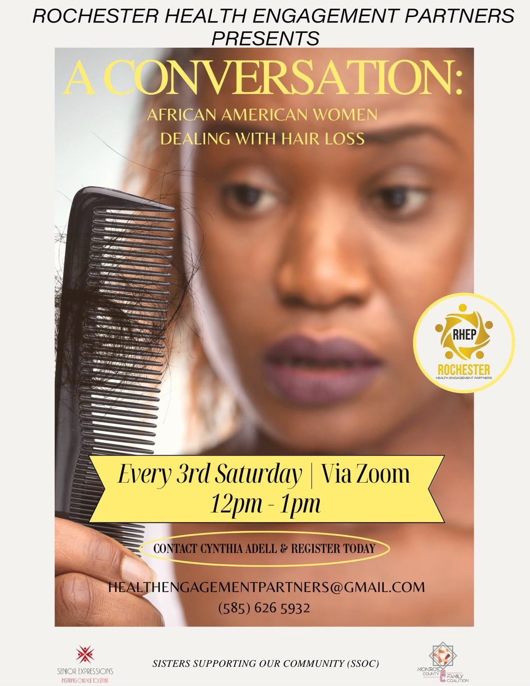

Community Calendar
February 2026

- American Heart Month with the National Heart, Lung, and Blood InstituteTrusted Source (NHLBI)
- Cholangiocarcinoma Awareness Month with the Cholangiocarcinoma Foundation
- Gall Bladder and Bile Duct Cancer Awareness Month with the National Foundation for Cancer Research
- AMD/Low Vision Awareness Month with the National Eye Institute
- International Prenatal Infection Prevention Month with organizations like Group B Strep International and the National Association of County and City Health Officials
- Marfan Syndrome Awareness Month with the Marfan Foundation
- National Cancer Prevention Month with the American Institute for Cancer Research
- National Children’s Dental Health Month with the American Dental Association
- Raynaud’s Awareness Month with the Raynaud’s Association
- World Aspergillosis Day (February 1) with the Fungal Infection Trust
- Time to Talk Day (February 1) with multiple organizations
- National “Wear Red” Day for women’s heart health (February 2) with the American Heart Association (AHA)
- Give Kids a Smile Day (February 2) with the American Dental Association
- Rheumatoid Awareness Day (February 2) with the CDC
- World Cancer Day (February 4) with the Union for International Cancer Control
- Tinnitus Awareness Week (February 5 to 11) with the American Tinnitus Association
- African Heritage and Health Week (February 7 to 13) with Old Ways Cultural Food Traditions
- Congenital Heart Defect Awareness Week (February 7 to 14) with Mended Hearts
- National Cardiac Rehabilitation Week (February 11 to 17) with the American Association of Cardiovascular and Pulmonary Rehabilitation
- Sepsis Survivor Week (February 11 to 17) with the Sepsis Alliance
- Heart Failure Awareness Week (February 11 to 17) with the Heart Failure Society of America
- International Epilepsy Day (February 12) with the Epilepsy Foundation
- National Donor Day (February 14) with Donate Life America and Donor Alliance
- National Caregivers Day (February 16) with the American Caregiver Association
- National Heart Valve Disease Awareness Day (February 22) with the Alliance for Aging Research
- Recreational Sports and Fitness Day (February 22) with the NIRSA
- National Eating Disorders Awareness Week (February 26 to March 3) with the National Eating Disorders Association
- International Repetitive Strain Injury Awareness Day (February 28) with the Unifor National Health and Safety Department
- Rare Disease Day (February 29) with multiple organizations